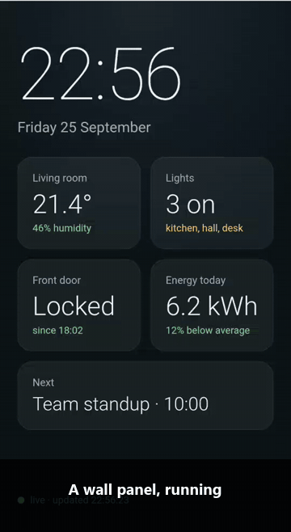

homeostat · experiment reports
Rules or an agent?
homeostat measures where deterministic rules are enough and where a model has to decide. A real phone works as an always-on screen, faults are injected, and the same recovery loop runs with rules only, rules first with a model, and the model for everything. Every run is checked by an independent verifier. These reports come from a OnePlus 5T, 20 runs per scenario.
